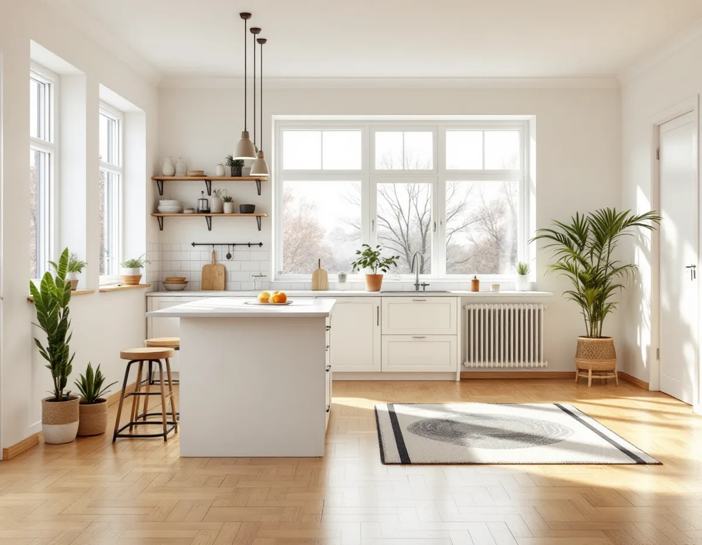
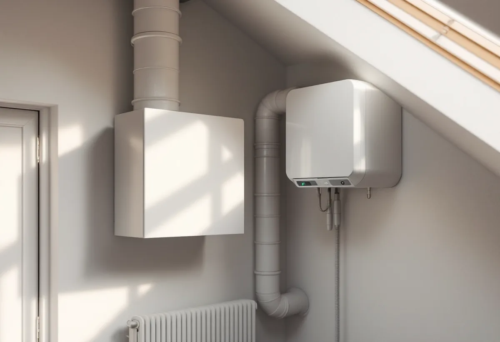
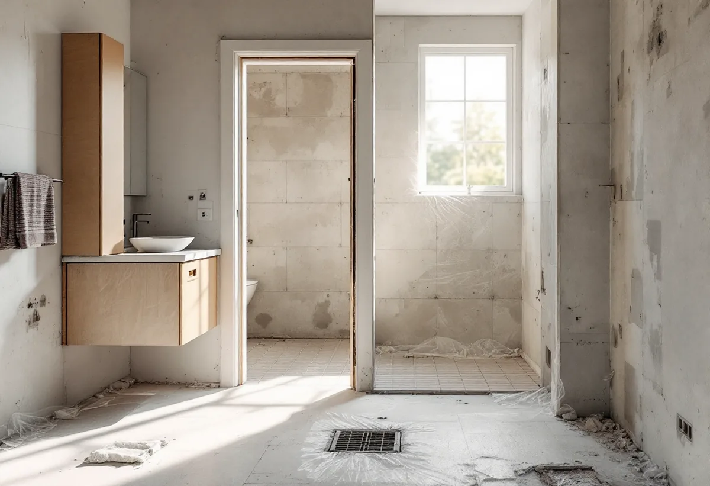

Platsbesök
Gratis besök där vi går igenom bostaden.
Husen i Kista byggdes på bara fem år i slutet av 1970-talet, och många har kvar sitt ursprungliga ventilationssystem och sina ursprungliga material. Geal Entreprenad AB totalrenoverar radhus och lägenheter i Kista och utgår från hur husen är byggda.

Stadsmuseets skrift om Kista berättar att staden köpte marken 1966 och att Kista byggdes ut under åren 1975–1980, med friare arkitektoniska former än i de andra stadsdelarna på Järvafältet. Kista centrum invigdes 1977.
Stadens områdesfakta för 2025 räknar i Kista omkring 3 600 bostadsrätter och 1 600 lägenheter hos privata hyresvärdar i flerbostadshus, och bland småhusen 482 med äganderätt och 404 bostadsrätter. En totalrenovering i Kista gäller därför ofta en bostadsrätt, i lägenhet eller radhus.

Stockholms stad beskriver från- och tilluftsventilation, ofta med värmeåtervinning, som vanlig i hus byggda från 1976 och framåt. Centrala fläktar styr både från- och tilluft, och systemet ställer höga krav på drift, skötsel och regelbundet underhåll. I hus från 1961–1975 är frånluft vanligare.
När väggar flyttas eller kök och badrum byggs om rubbas lätt balansen mellan till- och frånluft. Installation eller väsentlig ändring av ventilationen kräver anmälan och startbesked, och i en bostadsrätt även styrelsens tillstånd. Vi tar reda på vilket system huset har innan vi ritar.
Arbetsmiljöverket skriver att man ska utgå från att alla byggnader uppförda fram till 1982 kan innehålla asbest, eftersom asbest användes fram till förbudet det året. Även senare byggnader kan i vissa fall innehålla asbest från lager eller import.
Kista byggdes före förbudet. Innan golv, kakel och väggar rivs ska materialen därför undersökas, och det är enligt Arbetsmiljöverket byggherrens, projektörens och arbetsgivarens ansvar att det görs. Vi tar prov i planeringen så att en eventuell sanering hinns med.
Bostadsrättslagen kräver styrelsens tillstånd för ingrepp i bärande konstruktion, ändringar av ledningar för avlopp, värme, gas och vatten, ventilation, eldstad eller brandskydd och andra väsentliga förändringar. Styrelsen får bara vägra om åtgärden är till påtaglig skada eller olägenhet för föreningen.
Stockholms stad skriver att du inte behöver anmäla en ändrad planlösning inom lägenheten om inga tekniska egenskapskrav påverkas, till exempel när köket flyttas. Påverkas bärande konstruktion eller brandskydd krävs anmälan och startbesked. Mer om tjänsten finns under villarenovering och totalrenovering.
Enligt Elsäkerhetsverket ska de flesta elinstallationsarbeten utföras av ett registrerat elinstallationsföretag, och vid ändringar i den fasta installationen, till exempel ett uttag i köket eller nya ledningar i väggar, ska ett sådant anlitas. Även byte av ett befintligt vägguttag ska göras av ett elföretag om arbetet inte kan kontrolleras korrekt.
När köket flyttas eller väggar rivs i en lägenhet eller ett radhus i Kista följer elen med. Vi lägger in elinstallatören i tidplanen så att ledningarna dras innan väggar och tak stängs.

Gratis besök där vi går igenom bostaden.
Provtagning av material före rivning.
Underlag till styrelsen.
Startbesked när stomme, brand eller ventilation berörs.
El, vatten, avlopp och ventilation.
Golv, väggar, kök och badrum.
I en bostadsrätt ger Skatteverket rotavdrag för arbete innanför lägenhetens tak, väggar och golv som du ansvarar för enligt stadgarna. Stambyten och gemensamma delar ger inget avdrag. I ett ägt småhus räknas bland annat rivning av väggar och ny planlösning som rotarbete.
Avdraget är högst 30 procent av arbetskostnaden och högst 50 000 kronor per person och år. Material och resor ger inget avdrag. Geal drar avdraget direkt på fakturan.
Bostadens storlek, om asbest måste saneras, hur ventilationen påverkas, hur mycket av planlösningen som ändras och vilken standard du väljer. Efter ett gratis platsbesök får du ett skriftligt kostnadsförslag.
Renovera hela huset eller lägenheten.
Villarenovering →Takbyte, takbesiktning och plåtarbeten.
Takläggare i Kista →Låga tak, tätskikt och takbrunnar från 1970-talet.
Takrenovering i Kista →Gårdshus vid radhus och villor.
Attefallshus i Kista →Radhusen, föreningen och ventilationen.
Badrumsrenovering i Kista →Uterum, altan och föreningens tillstånd.
Byggföretag i Kista →Radhus, atriumhus och husgruppen.
Fasadmålning i Kista →Panel, skivor och isolering på radhus.
Fasadrenovering i Kista →Radhus och villor från 1970-talet.
Fönsterbyte i Kista →1970-talets radhusfönster.
Fönsterrenovering i Kista →Nya golv på betong i radhus och lägenheter.
Golvläggare i Kista →Golvslipning i bostadsrätt, hyresrätt och radhus.
Golvslipning i Kista →Småhus i förening och kök från 1970-talet.
Köksrenovering i Kista →1970-talets hus, asbest och ROT.
Målare i Kista →Rännor, stuprör och beslag.
Plåtslagare i Kista →Garderober, väggar och dörrar i lägenheten.
Snickare i Kista →Platta tak och pulpettak.
Takbyte i Kista →Lägenheter och radhus från 1970-talet.
Tapetsering i Kista →Tillbyggnad vid radhus och villor.
Tillbyggnad i Kista →